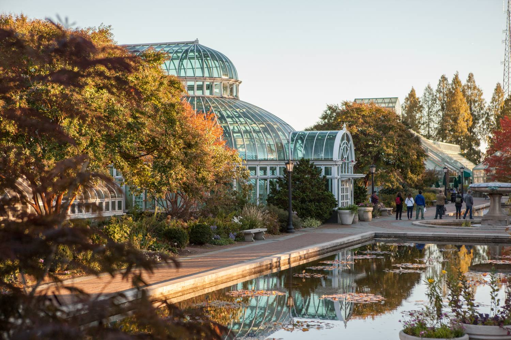
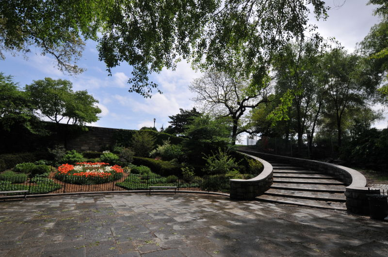
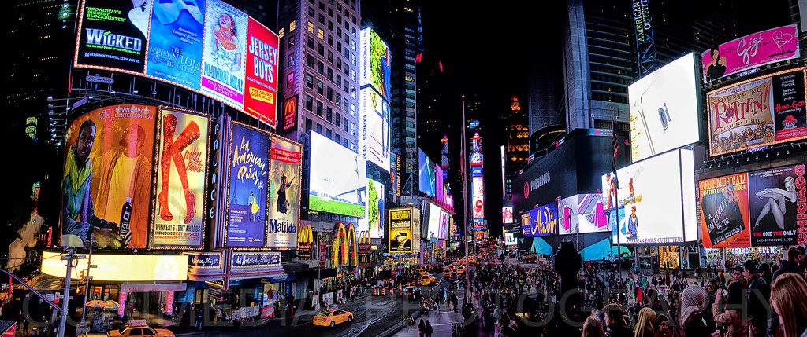

| http://usnyk.com/businessInfo.jsp?id=1949 |
Copyrighted in 2015/2016 |
Took ellis island photos and used them on the Sightseeing page, also the first image is in the slideshow on the homepage |
|
| https://www.flickr.com/photos/126654539@N08/17149522281 |
Taken on October 8, 2014 |
Took image and used it on the sightseeing page, also on the homepage slideshow |
|
| https://www.mentalfloss.com/article/92248/story-behind-poem-statue-liberty |
JULY 4, 2018 |
Took image and used it on the sightseeing page, also on the homepage slideshow |
 |
| https://www.history.com/news/10-surprising-facts-about-the-empire-state-building |
UPDATED: AUG 22, 2018 |
Took image and used it on the sightseeing page, also on the homepage slideshow |
 |
| https://abcnews.go.com/blogs/headlines/2013/04/man-survives-fall-from-empire-state-building-after-landing-on-catwalk |
April 25, 2013 |
Took image and used it on the sightseeing page |
|
| https://www.jamesmaherphotography.com/central-park-photography-tours-routes/ |
No timestamp |
Took image and used it on the nature page |
|
| https://unsplash.com/photos/A2CChTZvzTE |
September 14, 2019 |
Took image and used it on the nature page, also on the homepage slideshow |
 |
| https://www.nycgo.com/attractions/brooklyn-botanic-garden |
No timestamp |
Took images and used it on the nature page, the first image being on the homepage slideshow. (Photos under the -More Photos- tab) |
 |
| https://www.nycgovparks.org/parks/M081/photos |
No timestamp |
Took images and used it on the nature page, the first image being on the homepage slideshow. |
 |
| https://www.nycgo.com/attractions/brooklyn-bridge-park |
No timestamp |
Took image and used it on the nature page and on the homepage slideshow. (Photos under the -More Photos- tab) |
 |
| https://www.gsd.harvard.edu/project/brooklyn-bridge-park/ |
Spring 2003 |
Took image and used it on the nature page |
|
| https://www.dezeen.com/2017/06/05/freedom-tower-missed-opportunity-says-ian-schrager-new-york/ |
June 5th 2017 |
Took image and used it on the sightseeing page |
 |
| https://www.flickr.com/photos/curimedia/17255848402 |
Taken on April 20, 2015 |
Took image and used it on the activities page along with the homepage slideshow |
 |
| https://grist.org/climate/the-theme-for-this-years-times-square-ball-drop-climate-change/ |
Dec 31, 2019 |
Took image and used it on the activities page |
|
| https://www.newyorkbyrail.com/local-guide/museum-of-modern-art/ |
No timestamp |
Took image and used it on the activities page along with the homepage slideshow |
 |
| https://secretnyc.co/brave-enough-explore-catacombs-nyc-cathedral-candlelight/ |
MAY 8, 2019 |
Took image and used it on the activities page |
 |
| https://www.nytimes.com/2019/05/14/magazine/letter-of-recommendation-catacombs.html |
May 14, 2019 |
Took image and used it on the activities page along with the homepage slideshow |
|
| https://www.metmuseum.org/about-the-met/curatorial-departments/modern-and-contemporary-art |
No timestamp |
Took image and used it on the activities page |
|
| https://vocal.media/photography/the-10-best-places-for-street-photography-in-new-york-city |
March 2019 |
First image on the homepage slideshow |
 |
| https://www1.nyc.gov/ |
No timestamp |
Took their logo and put it on the form page |
 |